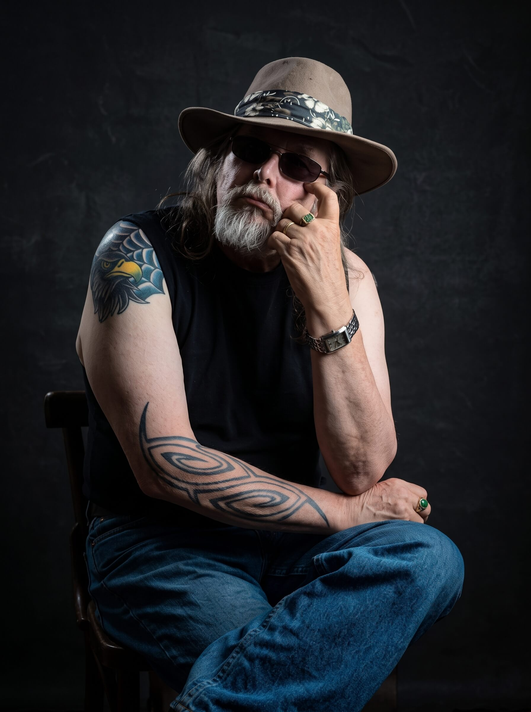
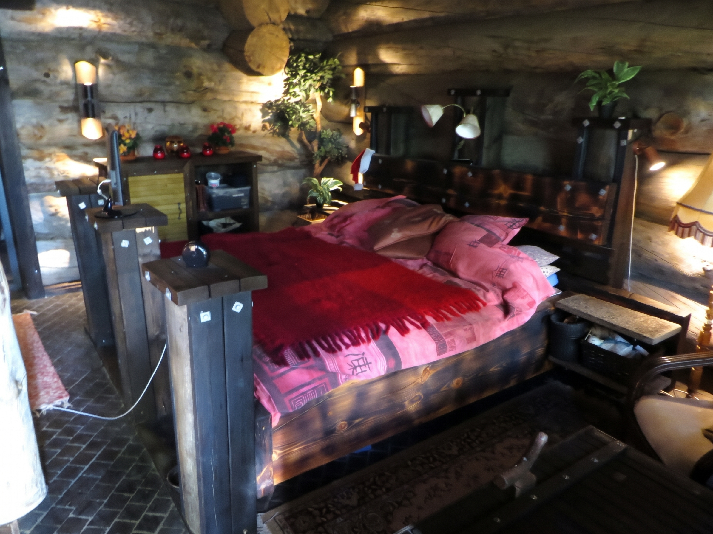
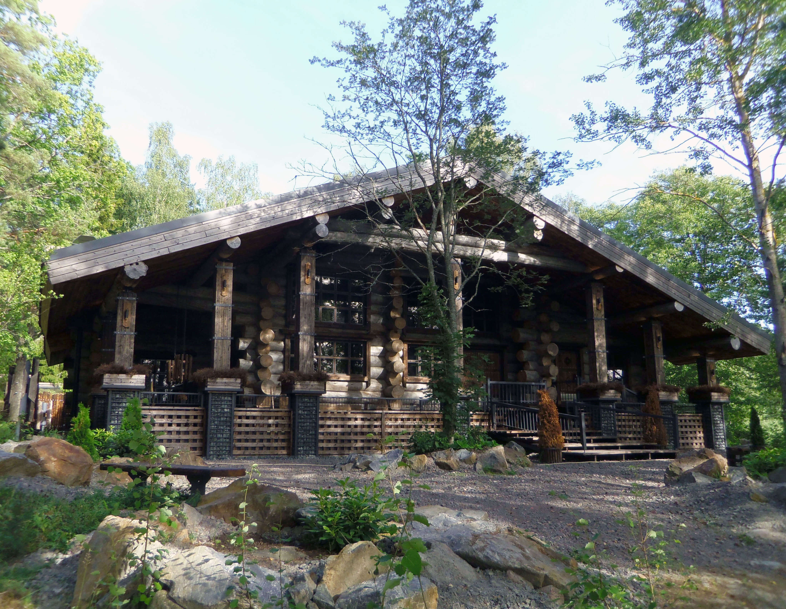

MASAN PUUTYÖT
OLEN 79-VUOTIAS ÄIJÄ.
KOULUTUKSELTANI AMMATTISOTILAS.
SEKOITIN KÄSITTEET OMA-ALOITTEELLISUUS
JA OMAVALTAISUUS, JONKA TAKIA SIIRRYIN
SIVIILIIN....SITTEN SEURASI SITÄ JA TÄTÄ....
ENIMMÄKSEEN SITÄ.
VUONNA 2023 JÄIN ELÄKKEELLE
KONESUUNNITTELIJANA. NYT VALMISTAN KAIKKEA
MAHDOLLISTA....MAHDOTTOMATKIN
MAHDOLLISIA...MUTTA VÄHÄN KALLIIMPIA.
KOULUAIKANA RADIKALISMI AIHEUTTI
ALLERGIAN OPISKELUA KOHTAAN, JONKA
OIREINA OLI MM. KOULUSSAKÄYNNIN JA
VARSINKIN LÄKSYJEN LUKUJEN LAIMINLYÖNTI.
TÄMÄ JOHTI LOPULTA KATASTROFIIN. EN OMAA
KOULUAJALTANI MINKÄÄNLAISTA TODISTUSTA.

NUORENA HARRASTIN MENESTYKSELLISESTI KILPAUINTIA. VUONNA 1966 OLIN HESAN MESSUHALLISSA VOITTAMASSA ROCK-YHTYEITTEN SM:N.
HAULIKKOAMMUNNASSA OLEN KILPAILLUT KOKO IKÄNI, JOSSA LAJISSA YKSI SUOMEN MESTARUUS JA PARI SUOMENENNÄTYSTÄ.
ENEMMITTÄ PUHEITTA ITSE ASIAAN. ENITEN ARVOSTAN SUUNNITTELEMAANI JA TOTEUTTAMAANI HIRSILINNAA VILLA-MARMAA. LATTIA-ALA 350M2, LISÄKSI TERASSI 140M2, HARJAKORKEUS 11,5M, 650M3 YLISUURTA KELOA. VALMISTIN ITSE KAIKKI HUONEKALUT, VALAISIMET, IKKUNAT, OVET JA TEIN PUUHAN ETEEN ITSE LUOKKAA 7000 TYÖTUNTIA.
MELKOINEN PIRTTI.
EN OLE KAUPPAAMASSA TÄLLAISTA PIRTTIÄ ..JOS JOKU ON KIINNOSTUNUT, VOIN KONSULTOIDA PROJEKTIA TIEDOILLANI.
OHEISENA MUUTAMA KUVA VILLA-MARMA-PROJEKTISTA.

